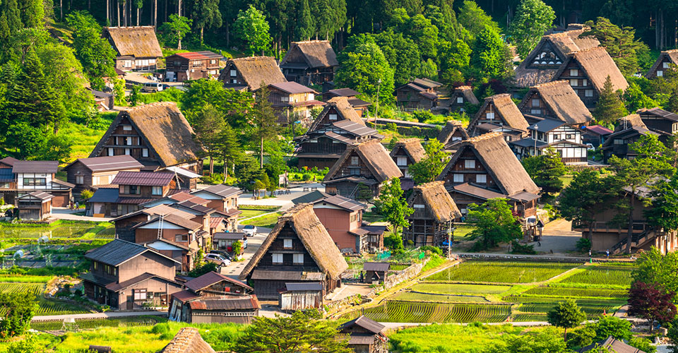
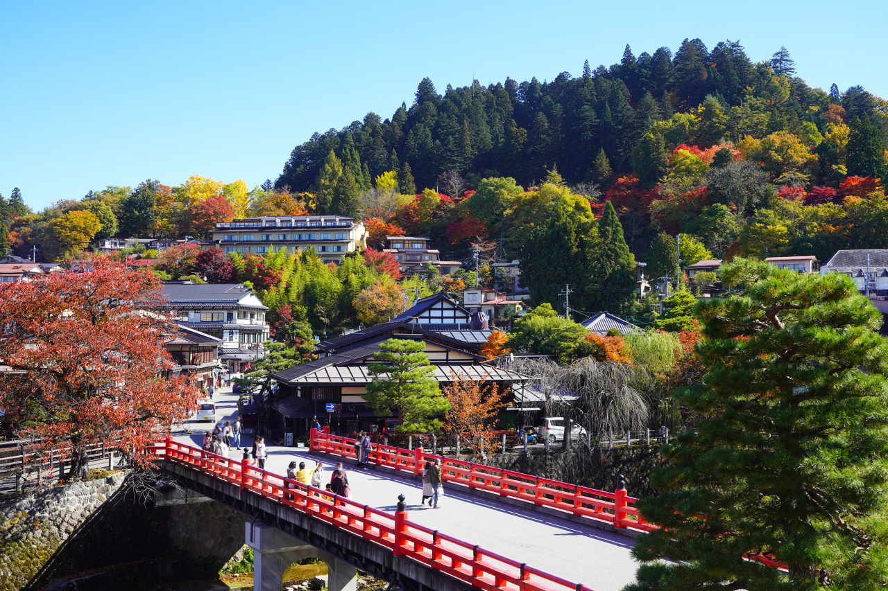
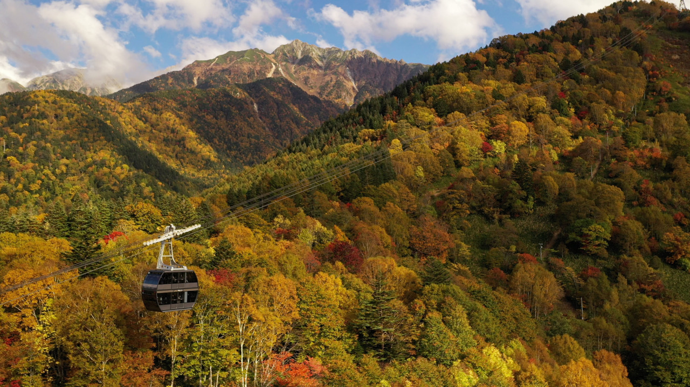
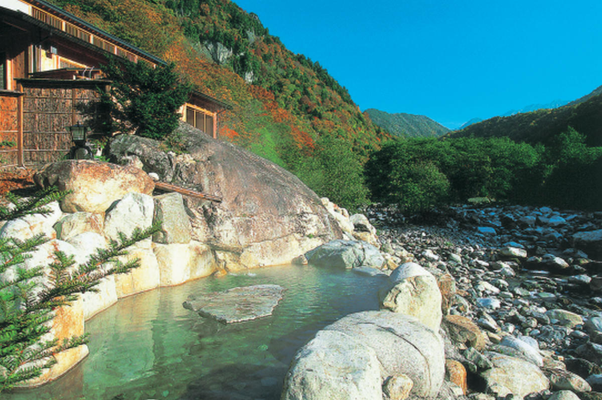

-
06:51
東京発
早起きごめん
-
08:28
名古屋着
なごや
-
08:43
名古屋発
特急に乗ります
-
10:58
高山着
長旅おつかれ
-
12:00
昼飯
どうしよう
-
13:00
どうしよう
どうしよう
-
19:00
夜ごはん
フレンチだよーん
-
08:00
朝食
バイキングもりもり
-
09:30
チェックアウト
向かうぜ
-
10:00
鍾乳洞
見たことない楽しみ
-
12:00
昼飯
白川郷で食べてもいい
-
13:00
白川郷
世界遺産だぜ
-
16:00
高山駅
終わっちゃうよお(>_<)
-
17:18
高山発
帰ります
-
18:54
富山着
帰りは富山経由
-
19:08
富山発
富山で飯食って後ろの自由席にしてもいい
-
21:20
東京着
fin
おすすめスポット

古い町並み (さんまち通り)
高山観光の中心。江戸時代の商家町の面影が残り、食べ歩きや地酒の試飲が楽しめます。

飛騨大鍾乳洞
日本有数の観光鍾乳洞。夏でも涼しく、ライトアップされた幻想的な空間が広がります。

白川郷 (世界遺産)
高山からバスで約50分。独特の合掌造り集落が広がる、日本の原風景とも言える世界遺産です。

高山陣屋
日本で唯一現存する代官所・郡代役所。江戸時代の役所の様子を垣間見ることができます。

宮川朝市・陣屋前朝市
毎朝開催される朝市。新鮮な野菜や果物、民芸品（さるぼぼなど）が並びます。

飛騨の里 (ひだのさと)
合掌造りなど飛騨の古い民家を移築・復元した野外博物館。手軽に昔の暮らしを体験できます。

高山祭屋台会館
豪華絢爛な「高山祭」で使われる屋台（山車）を常時展示。その精巧な装飾は圧巻です。

中橋 (なかばし)
高山のシンボル的な赤い橋。宮川と古い町並みを背景にした絶好の写真スポットです。
飛騨国分寺
樹齢1200年を超える大イチョウと、美しい三重塔が目印の、高山市内最古の寺院です。

新穂高ローPウェイ
2階建てゴンドラが特徴。標高2,156mの山頂展望台から北アルプスの大パノラマを楽しめます。

奥飛騨温泉郷
平湯温泉や福地温泉など、5つの温泉地の総称。大自然の中の露天風呂が魅力です。
周辺マップ
ピンをタップして場所を確認できます